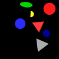
(1)
Exactly one shape is a yellow shape and a yellow triangle is to the right of a blue shape.
There is a magenta shape and not zero red shapes are triangles.
A red circle is bigger than a yellow triangle or there is a cross.
A blue cross is farther from an ellipse than a red circle or a yellow shape is a circle.
A gray triangle is lighter than a blue shape and there is a red triangle.
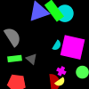
(2)
There is a cyan cross or a red semicircle is farther from a gray semicircle than a blue rectangle.
At least one triangle is a yellow shape or at least one rectangle is a gray shape.
Exactly all shapes but one are cyan circles and a yellow shape is closer to a green circle than a cyan circle.
More than four blue shapes are circles or a green circle is above a rectangle.
More than zero shapes are circles and a red pentagon is below a gray semicircle.
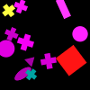
(3)
A magenta shape is above a magenta cross or a magenta shape is above a red square.
At most all shapes but one are magenta shapes or a circle is a magenta shape.
A red ellipse is farther from a magenta cross than a magenta shape and there is a magenta circle.
Not zero squares are magenta shapes and a triangle is darker than a yellow cross.
A magenta circle is to the left of a cross and a yellow cross is to the left of a rectangle.
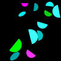
(4)
There is a cyan semicircle and there is a magenta ellipse.
A cyan semicircle is smaller than a cyan semicircle or a shape is a cyan shape.
Less than one shape is a green shape and a cyan shape is smaller than a semicircle.
A few semicircles are green shapes and there is an ellipse.
Exactly two semicircles are cyan shapes or an ellipse is darker than a gray semicircle.
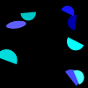
(5)
A blue semicircle is closer to a cyan semicircle than a blue shape and a cyan semicircle is closer to a blue semicircle than a blue shape.
A blue shape is a semicircle and a cyan semicircle is darker than a cyan semicircle.
A yellow semicircle is above a blue semicircle and at most five cyan shapes are ellipses.
A blue shape is in front of a blue semicircle or a cyan shape is a pentagon.
Not all cyan shapes but one are semicircles and there is a cyan shape.
(6)
No shape is a triangle or no shape is a cross.
A semicircle is a blue shape or a red ellipse is closer to a green shape than a cyan ellipse.
No magenta shape is a square and there is a red ellipse.
Less than five shapes are semicircles or exactly two shapes are semicircles.
A cyan semicircle is above a semicircle and a magenta semicircle is above a semicircle.
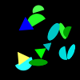
(7)
At least zero semicircles are cyan shapes and there is a green ellipse.
There is a gray shape and there is a green shape.
More than all green shapes but one are triangles and a green shape is bigger than a green ellipse.
There is a yellow ellipse or a gray semicircle is below a semicircle.
Exactly one semicircle is a cyan shape or a green ellipse is below a cyan shape.
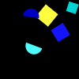
(8)
A shape is a green shape or a pentagon is darker than a square.
A green shape is bigger than a cyan shape or a gray shape is bigger than a cyan shape.
A blue shape is above a cyan semicircle or there is a square.
A yellow shape is bigger than a cyan semicircle and there is a cyan square.
A shape is a cyan shape or most semicircles are blue shapes.
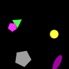
(9)
At least five ellipses are magenta shapes or at most zero ellipses are magenta shapes.
A green triangle is closer to a magenta shape than an ellipse and a magenta shape is a triangle.
A square is farther from a yellow circle than a magenta shape or a triangle is a magenta shape.
A gray shape is an ellipse or exactly zero magenta shapes are pentagons.
There is a yellow circle or there is a gray pentagon.
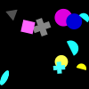
(10)
A cyan shape is behind a cyan shape or a yellow shape is behind a blue shape.
There is a triangle and no magenta shape is a pentagon.
At least three circles are magenta shapes or a cyan ellipse is above a semicircle.
There is a cyan pentagon and a circle is in front of a triangle.
There is a red circle and a semicircle is to the right of a magenta circle.
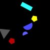
(11)
There is a red shape and there is a yellow shape.
A red pentagon is below a pentagon and there is a red triangle.
There is a cross or a pentagon is bigger than a gray shape.
There is a semicircle and there is a square.
There is a cyan semicircle or there is a green semicircle.
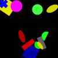
(12)
More than all blue shapes but one are crosses and there is a cyan shape.
A shape is a semicircle and at most four gray shapes are rectangles.
An ellipse is bigger than a yellow shape or less than four shapes are crosses.
A yellow shape is to the right of a blue square or there is a square.
A yellow square is bigger than a circle and there is a yellow shape.
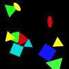
(13)
There is a green triangle and at least one pentagon is a cyan shape.
At least all triangles but one are yellow shapes or no pentagon is a green shape.
A yellow ellipse is above a cross or there is a yellow circle.
Exactly five triangles are cyan shapes or more than four squares are blue shapes.
A red triangle is to the left of a red shape and a yellow ellipse is to the left of a red shape.
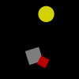
(14)
There is a gray square and exactly one gray shape is a square.
A red shape is a square or a cyan shape is a square.
Less than four shapes are red squares or there is a gray square.
A red shape is a square and a yellow circle is bigger than a square.
At least zero gray shapes are squares and exactly three red shapes are squares.
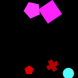
(15)
A cross is a green shape or a cyan square is below a magenta square.
Less than five crosses are red shapes and less than five squares are magenta shapes.
A shape is a green shape or a shape is a green shape.
Not zero squares are magenta shapes or not zero pentagons are red shapes.
A red cross is behind a magenta shape or a shape is a green cross.
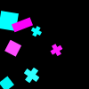
(16)
Not three shapes are squares or not three shapes are crosses.
A magenta cross is lighter than a cyan shape and a cyan cross is lighter than a cyan shape.
A magenta shape is a square or less than two magenta shapes are crosses.
Less than all cyan shapes but one are squares and there is a cyan shape.
A cyan cross is smaller than a cross or a cyan cross is darker than a rectangle.
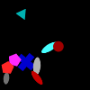
(17)
A shape is an ellipse or a shape is an ellipse.
A pentagon is a red shape and a pentagon is a red shape.
There is a pentagon and there is an ellipse.
A gray shape is closer to an ellipse than a red circle and a triangle is a red shape.
A circle is a red shape and a triangle is a gray shape.
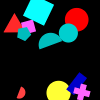
(18)
There is a red semicircle or exactly zero shapes are circles.
There is a yellow pentagon or there is a blue triangle.
More than zero shapes are green shapes or more than zero shapes are gray shapes.
A semicircle is a red shape and a rectangle is a cyan shape.
At most two pentagons are cyan shapes and there is a red square.
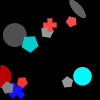
(19)
A blue ellipse is above a red pentagon or a blue pentagon is above a cyan circle.
A pentagon is lighter than a gray circle and a pentagon is lighter than a gray pentagon.
A cyan pentagon is above a cross and a red pentagon is above a circle.
A semicircle is smaller than a gray circle or a gray shape is a rectangle.
A circle is closer to a red semicircle than a gray shape and at least two shapes are gray pentagons.
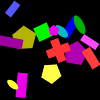
(20)
A blue cross is behind a cyan ellipse or a yellow rectangle is behind a magenta rectangle.
More than three shapes are circles and there is a rectangle.
A rectangle is below a magenta rectangle or a pentagon is below a magenta pentagon.
A yellow shape is a pentagon or a yellow shape is a pentagon.
Less than three shapes are magenta pentagons and a rectangle is darker than a yellow pentagon.
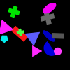
(21)
There is a blue shape and not four red shapes are rectangles.
A magenta shape is closer to a blue shape than a blue triangle or a green shape is closer to a cyan shape than a gray cross.
There is a cross or there is a circle.
A shape is a cyan semicircle and a blue shape is darker than a blue triangle.
Not five shapes are gray rectangles and not five shapes are green crosses.
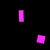
(22)
There is a green shape and more than zero gray shapes are squares.
There is a triangle or at most all rectangles but one are magenta shapes.
There is a magenta shape and there is a magenta shape.
Not all magenta shapes but one are squares or there is a magenta rectangle.
At most one magenta shape is a rectangle and at most one magenta shape is a rectangle.
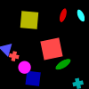
(23)
A red square is in front of a cross or more than five blue shapes are pentagons.
A magenta ellipse is darker than a circle or at least one shape is a magenta circle.
A square is behind a blue square and there is an ellipse.
A square is a blue shape and a triangle is a yellow shape.
A blue ellipse is below an ellipse or a circle is a yellow shape.
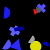
(24)
Exactly two shapes are blue shapes or a cross is a blue shape.
A blue shape is a semicircle or a gray triangle is to the right of a blue semicircle.
A triangle is a magenta shape and not two shapes are gray shapes.
Exactly three gray shapes are gray semicircles and there is a circle.
A semicircle is a cyan shape or a gray rectangle is smaller than a cross.
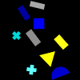
(25)
A yellow shape is a triangle and all gray shapes are rectangles.
A semicircle is a gray rectangle or at least four blue shapes are blue rectangles.
A yellow shape is a triangle or a yellow shape is a triangle.
A rectangle is a gray rectangle or a cyan cross is farther from a cyan shape than a blue semicircle.
Not all shapes but one are blue shapes and a green shape is farther from a yellow rectangle than a gray rectangle.
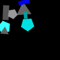
(26)
A green shape is to the left of a pentagon or a blue shape is a pentagon.
A cyan shape is farther from a blue rectangle than a pentagon or more than four gray shapes are triangles.
There is a cyan circle or more than four gray shapes are pentagons.
A green shape is smaller than a cyan shape or more than all triangles but one are gray shapes.
A gray triangle is above a gray shape or a gray triangle is above a cyan shape.
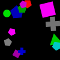
(27)
A magenta pentagon is in front of a green shape or less than zero green shapes are pentagons.
A triangle is bigger than a square and a blue shape is a pentagon.
A cyan circle is lighter than a square or a gray shape is a pentagon.
A rectangle is a blue shape or a blue cross is above a gray pentagon.
A cross is a blue cross or a magenta pentagon is lighter than a blue shape.
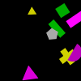
(28)
A gray pentagon is lighter than a blue shape or a triangle is a green shape.
Less than two shapes are green shapes and there is a yellow shape.
A green shape is to the left of a gray pentagon and a semicircle is a magenta shape.
Not zero rectangles are green shapes or a yellow shape is below a magenta shape.
Less than all yellow shapes but one are triangles and there is a yellow shape.
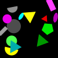
(29)
A triangle is below a gray shape and more than zero shapes are rectangles.
At most four triangles are red shapes or a triangle is a green shape.
At least all cyan shapes but one are triangles or a magenta shape is a rectangle.
A red triangle is smaller than a gray semicircle and a gray semicircle is smaller than a magenta semicircle.
There is a red shape and a red semicircle is smaller than a triangle.
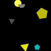
(30)
Exactly all gray shapes but one are gray triangles and a yellow shape is a yellow circle.
A triangle is farther from a yellow ellipse than a yellow shape or there is a red triangle.
There is a yellow circle or half the yellow shapes are yellow circles.
At most three shapes are gray shapes and at most three shapes are gray shapes.
Not five shapes are gray shapes and more than five shapes are yellow shapes.
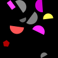
(31)
A gray shape is closer to a semicircle than a red semicircle and a red shape is closer to a rectangle than a magenta semicircle.
A semicircle is lighter than a gray shape or a semicircle is lighter than a red shape.
There is a red semicircle or at most five rectangles are gray shapes.
There is a circle and at most one red shape is a semicircle.
A semicircle is a blue shape and a few semicircles are blue shapes.
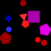
(32)
There is a red shape or there is a red shape.
Less than one red shape is a cross and a green circle is darker than a red pentagon.
A red circle is above a blue cross and a red circle is above a magenta square.
Exactly three crosses are red shapes or there is a yellow shape.
A red shape is farther from a square than a red shape and a red shape is farther from a pentagon than a magenta shape.
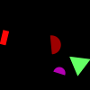
(33)
There is a rectangle or more than four red shapes are rectangles.
There is a semicircle and a green triangle is lighter than a magenta shape.
A red shape is a semicircle and a red shape is a rectangle.
A red semicircle is bigger than a magenta semicircle and a semicircle is a red semicircle.
A third of the magenta shapes is a semicircle or there is a semicircle.
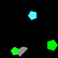
(34)
A shape is a pentagon or more than one shape is a pentagon.
A green semicircle is to the right of a green pentagon or a shape is a green shape.
A red shape is to the left of a green pentagon or a yellow shape is to the left of a gray semicircle.
A cyan pentagon is smaller than a pentagon and a semicircle is a green shape.
A gray shape is below a cyan pentagon or there is a green pentagon.
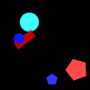
(35)
At least all shapes but one are red shapes or a shape is a red shape.
There is a cyan circle and there is a red circle.
A pentagon is to the left of a circle or at least five circles are cyan shapes.
There is a cyan circle and there is a red circle.
There is a rectangle or more than all pentagons but one are red shapes.
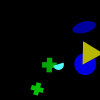
(36)
A green shape is closer to a cyan semicircle than a green shape or a blue shape is closer to a yellow triangle than a blue shape.
Not all circles but one are blue shapes and not all circles but one are blue shapes.
There is a green cross and a cross is above a cross.
There is a blue circle and a green cross is to the left of a yellow triangle.
There is a green cross and a cross is closer to a circle than a green shape.

(37)
Exactly all shapes but one are yellow shapes or exactly three shapes are red shapes.
A green square is behind a green shape and there is a square.
There is a magenta square and there is a cyan cross.
A green shape is behind a pentagon and a cyan shape is a square.
A magenta rectangle is darker than a magenta shape and a green pentagon is darker than a cyan shape.
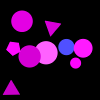
(38)
There is a square and a triangle is closer to a circle than a blue circle.
There is a pentagon or a magenta shape is bigger than a pentagon.
There is a circle and there is a triangle.
A magenta shape is lighter than a magenta circle or there is a magenta shape.
A cyan shape is a triangle or a blue circle is behind a magenta shape.
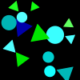
(39)
Exactly five triangles are yellow shapes and there is a triangle.
A triangle is a cyan shape and more than two shapes are cyan shapes.
There is a circle and there is a triangle.
A triangle is a green shape and a circle is a cyan shape.
A triangle is a cyan shape or a circle is a cyan shape.
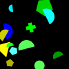
(40)
More than five shapes are green shapes or more than five shapes are yellow shapes.
A green semicircle is smaller than a cyan semicircle or there is a yellow pentagon.
A yellow circle is lighter than a green shape or a shape is a gray shape.
Exactly all pentagons but one are green pentagons or a rectangle is darker than a semicircle.
A third of the yellow shapes is a triangle or there is a cyan pentagon.
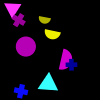
(41)
At most five red shapes are semicircles or a yellow semicircle is below a yellow semicircle.
There is a yellow triangle or there is a yellow circle.
Exactly zero shapes are ellipses or a blue shape is to the left of a cyan triangle.
There is a magenta circle and there is a cyan triangle.
A magenta circle is closer to a yellow semicircle than a blue shape and a yellow semicircle is closer to a magenta circle than a blue shape.
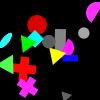
(42)
Less than two gray shapes are circles or a blue shape is in front of a circle.
A green shape is smaller than a magenta semicircle or a yellow shape is a triangle.
A green shape is above a gray shape or there is a cyan square.
Exactly four red shapes are circles or there is a green triangle.
A green shape is a circle and a red shape is lighter than a red shape.
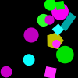
(43)
A yellow rectangle is below a cyan rectangle and more than four circles are magenta shapes.
More than zero rectangles are magenta shapes or more than zero pentagons are magenta shapes.
A yellow pentagon is in front of a magenta circle and a circle is a cyan shape.
A magenta circle is to the right of a cyan rectangle and there is a circle.
A green shape is farther from a circle than a square or a magenta shape is closer to a rectangle than a circle.
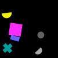
(44)
A shape is a square or a green shape is lighter than a semicircle.
There is a yellow rectangle or at least five gray shapes are semicircles.
A magenta square is darker than a blue shape and there is a gray circle.
There is a gray triangle or there is a gray pentagon.
At most three semicircles are yellow shapes and at most three circles are gray shapes.

(45)
A circle is a green shape or an ellipse is a cyan shape.
A pentagon is a gray shape or a blue cross is smaller than a blue rectangle.
A magenta triangle is lighter than a green circle and a blue rectangle is lighter than a yellow pentagon.
There is a blue triangle and there is a blue ellipse.
Less than five shapes are rectangles and less than five shapes are pentagons.
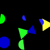
(46)
There is a cyan shape and a green triangle is closer to a blue shape than a green shape.
At least one blue shape is a rectangle and there is a yellow shape.
At least two blue shapes are semicircles or at least two blue shapes are triangles.
A blue shape is closer to a triangle than a semicircle and a magenta shape is closer to a semicircle than a triangle.
A blue circle is behind a blue semicircle or less than two green shapes are triangles.
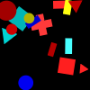
(47)
A red circle is behind a cyan triangle or at most two blue shapes are rectangles.
A shape is a cyan shape or a shape is a yellow shape.
A red square is darker than a red circle and there is a rectangle.
Exactly all cyan shapes but one are triangles or there is a blue pentagon.
A rectangle is to the left of a circle and at least zero red shapes are red squares.
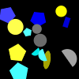
(48)
A blue rectangle is closer to a blue shape than a gray shape and less than four shapes are ellipses.
A semicircle is a gray semicircle and a blue shape is smaller than a yellow shape.
A shape is a pentagon and a shape is a semicircle.
A shape is a semicircle or a shape is a semicircle.
A pentagon is a gray shape or a pentagon is a gray shape.
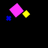
(49)
A few shapes are squares or no shape is a square.
Not one shape is a yellow shape and a magenta square is to the left of a yellow shape.
There is a yellow square or there is a yellow cross.
There is a gray cross or at least four pentagons are yellow shapes.
A square is a yellow shape or a square is a yellow shape.
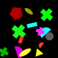
(50)
There is a yellow ellipse or there is a magenta cross.
There is a magenta semicircle or at least three shapes are yellow shapes.
There is a gray circle or there is a yellow ellipse.
A gray shape is closer to a pentagon than a gray circle or at least five cyan shapes are semicircles.
A red shape is to the left of a semicircle or a magenta shape is to the left of a triangle.
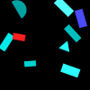
(51)
Most cyan shapes are cyan rectangles and exactly one cyan shape is a cyan rectangle.
All red shapes are rectangles and there is a gray shape.
There is a red triangle and not all shapes but one are semicircles.
At least five pentagons are cyan shapes and a cyan rectangle is closer to a cyan rectangle than a cyan semicircle.
There is a cyan shape and there is a gray shape.
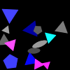
(52)
At most two ellipses are gray shapes and at most two ellipses are gray shapes.
An ellipse is lighter than a blue triangle or more than four blue shapes are pentagons.
Two thirds of the ellipses are gray shapes or a triangle is darker than a triangle.
A gray triangle is closer to a triangle than a gray shape or not three ellipses are gray shapes.
A triangle is a magenta shape and a triangle is a red shape.
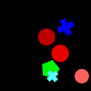
(53)
Not one cyan shape is a cross or a red circle is behind a pentagon.
A cyan cross is smaller than a red shape and a blue cross is smaller than a red shape.
A blue cross is smaller than a red circle and a shape is a cyan shape.
A red shape is darker than a blue cross or a red shape is darker than a cyan cross.
A cross is smaller than a circle and a shape is a red circle.
(54)
A gray shape is smaller than a yellow semicircle or a gray shape is smaller than a yellow square.
A blue shape is a square and more than two yellow shapes are squares.
At most zero yellow shapes are triangles or less than two yellow shapes are squares.
A cross is a yellow shape or a cross is a yellow shape.
A yellow shape is smaller than a gray shape or less than all yellow shapes but one are yellow triangles.
(55)
Exactly three shapes are pentagons or a gray shape is a pentagon.
A yellow pentagon is closer to a square than a blue cross or at most four gray shapes are squares.
A blue cross is farther from a red shape than a pentagon and a pentagon is a gray shape.
At most all pentagons but one are yellow shapes or there is a blue square.
There is a red pentagon and there is a magenta square.
(56)
There is a green shape and exactly two squares are red squares.
A green shape is above a cyan circle or a quarter of the shapes is a semicircle.
There is a cyan triangle and there is a green square.
A cyan semicircle is to the right of a green square or not one shape is a cyan semicircle.
A semicircle is a red shape or a red rectangle is to the left of a red square.
(57)
Two thirds of the circles are yellow shapes and a rectangle is to the left of a yellow shape.
A shape is a cyan shape and most triangles are yellow shapes.
A few semicircles are yellow shapes or there is a yellow rectangle.
There is a yellow semicircle or a rectangle is smaller than a gray rectangle.
A cyan semicircle is bigger than a rectangle or a cyan circle is bigger than a circle.
(58)
There is a blue shape or there is a blue shape.
At least one semicircle is a yellow shape or at least one rectangle is a yellow shape.
A yellow ellipse is below a magenta cross and a blue semicircle is below a cyan cross.
A magenta shape is a triangle and a cyan cross is lighter than a green shape.
A yellow cross is lighter than a cross or a red cross is lighter than an ellipse.

(59)
A shape is a yellow triangle and a shape is a yellow triangle.
A magenta shape is a magenta ellipse or a cyan shape is a cyan triangle.
At least zero semicircles are magenta shapes or there is a red shape.
There is a gray square or a gray semicircle is in front of a square.
A gray semicircle is darker than a magenta square and there is a gray shape.
(60)
A few shapes are gray rectangles and a few shapes are gray rectangles.
A circle is a magenta shape or a semicircle is a gray shape.
There is a pentagon or exactly two yellow shapes are circles.
Half the shapes are semicircles or a yellow semicircle is below a yellow shape.
A yellow shape is smaller than a semicircle or there is a yellow semicircle.
(61)
At least all shapes but one are magenta shapes or a cross is a magenta shape.
More than three shapes are gray shapes or there is a magenta semicircle.
There is a blue shape or a magenta semicircle is to the right of a magenta circle.
All shapes are green shapes and a magenta semicircle is closer to a magenta cross than a magenta shape.
A cross is behind a magenta cross and at most two ellipses are magenta ellipses.
(62)
A magenta triangle is to the right of a blue cross and a magenta triangle is to the right of a blue cross.
A magenta shape is to the right of a blue shape and there is a blue shape.
A shape is a red shape or a shape is a cyan shape.
A magenta shape is closer to a blue cross than a square and a blue shape is closer to a blue cross than a square.
Exactly three shapes are gray shapes and three quarters of the shapes are red shapes.
(63)
More than five cyan shapes are ellipses and a magenta rectangle is above an ellipse.
An ellipse is a cyan shape and an ellipse is a green shape.
More than three cyan shapes are cyan ellipses and there is a magenta ellipse.
A shape is a green shape or a shape is a yellow shape.
A cyan circle is to the left of a cyan ellipse or a cyan ellipse is to the left of a cyan ellipse.
(64)
A quarter of the gray shapes is a gray cross or a yellow semicircle is smaller than a semicircle.
There is a semicircle and there is a cross.
A rectangle is lighter than a gray semicircle or a rectangle is lighter than a yellow rectangle.
A yellow semicircle is farther from a gray rectangle than a yellow rectangle or more than all gray shapes but one are gray crosses.
More than three shapes are crosses or a magenta shape is behind a rectangle.
(65)
At most three shapes are magenta shapes and a triangle is lighter than an ellipse.
A green pentagon is below a blue pentagon or there is a blue cross.
Exactly three blue shapes are blue ellipses or a gray cross is lighter than a green pentagon.
A red square is lighter than a gray cross or a magenta circle is lighter than a blue rectangle.
A cross is to the left of a magenta circle or a square is a gray shape.
(66)
Exactly two yellow shapes are crosses and exactly two yellow shapes are crosses.
At least zero shapes are semicircles and at least zero shapes are semicircles.
Not zero shapes are red semicircles and a yellow cross is lighter than a rectangle.
A shape is a semicircle or a yellow semicircle is farther from a red semicircle than a red cross.
Less than two shapes are rectangles and a red shape is a rectangle.
(67)
There is a green pentagon or exactly five shapes are pentagons.
A square is farther from a green square than a circle and an ellipse is farther from a gray cross than a circle.
There is a green cross or more than five squares are green shapes.
There is a cyan cross and there is a cyan pentagon.
A circle is farther from a gray cross than a green shape or at most two shapes are squares.
(68)
At most all green shapes but one are triangles or at most all green shapes but one are rectangles.
A square is a green shape and a green triangle is below a green rectangle.
There is a green shape or there is a magenta shape.
There is a red rectangle or there is a yellow pentagon.
A shape is a cyan triangle and a shape is a green pentagon.
(69)
A shape is a gray square and less than one yellow shape is a yellow ellipse.
A yellow rectangle is closer to a square than a semicircle and there is a gray shape.
There is a red cross and there is a blue cross.
A shape is a semicircle and a shape is a cross.
There is a gray ellipse and a gray ellipse is to the left of a gray shape.
(70)
A shape is a red shape or at least one triangle is a blue shape.
Exactly four shapes are blue shapes or there is a red shape.
More than three shapes are cyan triangles or a shape is a cyan cross.
There is a cyan triangle or not two triangles are magenta triangles.
Not one shape is a magenta triangle or a magenta triangle is closer to a pentagon than a blue triangle.
(71)
A few gray shapes are triangles and a magenta cross is farther from a green shape than a cross.
A rectangle is a cyan shape or a red shape is to the left of a cyan rectangle.
There is a magenta ellipse and a red shape is bigger than a gray cross.
A magenta shape is above a cross and a green shape is above a rectangle.
More than two yellow shapes are rectangles or a cyan rectangle is below a magenta triangle.
(72)
There is a red ellipse or a circle is behind a cyan semicircle.
Not five shapes are ellipses and a cyan shape is a circle.
There is a rectangle or more than four shapes are cyan circles.
There is a cyan ellipse or a triangle is smaller than a cyan circle.
An ellipse is to the right of a cyan shape and an ellipse is to the right of a cyan shape.
(73)
A red shape is darker than a red square or a magenta shape is darker than a blue pentagon.
Not all rectangles but one are magenta rectangles or exactly three semicircles are cyan semicircles.
A gray semicircle is lighter than a blue ellipse or less than four blue shapes are triangles.
There is a square and exactly two ellipses are cyan shapes.
A gray shape is a square and a magenta cross is darker than a red shape.
(74)
There is a yellow shape and there is a yellow shape.
There is a semicircle or exactly three triangles are yellow shapes.
A gray triangle is darker than a yellow circle and there is a red semicircle.
There is a yellow semicircle and more than two semicircles are magenta shapes.
Less than two semicircles are yellow shapes and all semicircles are red shapes.

(75)
There is a red shape and there is a yellow shape.
A circle is a red shape or at least one pentagon is a magenta shape.
A shape is a yellow shape and a shape is a yellow shape.
More than zero shapes are cyan shapes or there is a red triangle.
A shape is a blue circle and a shape is a red semicircle.
(76)
Half the shapes are yellow semicircles or a cyan triangle is to the left of a cyan shape.
There is a green triangle or a triangle is to the left of a square.
More than three shapes are blue shapes and a semicircle is a green shape.
Exactly two shapes are blue semicircles and there is a cyan square.
A rectangle is above a blue semicircle or a blue shape is a semicircle.
(77)
A red square is darker than a pentagon and a gray pentagon is darker than a triangle.
There is a gray pentagon and there is a green square.
There is a magenta cross and there is a gray rectangle.
More than two pentagons are green shapes or an ellipse is a gray shape.
A shape is a magenta shape or all shapes are gray shapes.
(78)
More than all shapes but one are gray shapes or a pentagon is to the left of a magenta shape.
There is a yellow shape and not one shape is a yellow shape.
Exactly one cross is a blue shape and a magenta rectangle is above a yellow rectangle.
At most one shape is a triangle and there is a yellow rectangle.
There is a triangle or at most two shapes are crosses.
(79)
A yellow shape is farther from a semicircle than a yellow semicircle and a gray shape is farther from a semicircle than a gray rectangle.
At least four semicircles are yellow shapes or a triangle is farther from a gray rectangle than a gray semicircle.
A pentagon is a gray shape and a rectangle is a yellow shape.
A magenta shape is a magenta semicircle and a magenta shape is a magenta rectangle.
Less than one gray shape is a rectangle and a yellow shape is above a magenta shape.

(80)
A green circle is to the right of a gray semicircle and a shape is a semicircle.
A semicircle is to the left of a yellow rectangle or a pentagon is to the left of a green circle.
Half the squares are green shapes or a green circle is to the right of a cyan pentagon.
A rectangle is to the right of a rectangle and there is a red shape.
Less than one shape is a square or there is a gray circle.
(81)
A magenta shape is bigger than a yellow shape and a blue shape is bigger than a yellow shape.
Not two gray shapes are crosses and there is a rectangle.
A shape is a blue shape or at most five shapes are gray shapes.
A cyan shape is a triangle and a blue shape is a triangle.
There is a gray cross and there is a red cross.

(82)
A gray shape is to the left of a yellow cross and most shapes are blue ellipses.
A shape is a blue triangle and a shape is a red pentagon.
A square is a green square and more than one shape is a blue ellipse.
There is a red pentagon or an ellipse is below a yellow rectangle.
A blue ellipse is bigger than a yellow shape or a red shape is a square.
(83)
There is a yellow shape and at least zero shapes are cyan semicircles.
A shape is a semicircle or a cyan shape is to the right of a green semicircle.
There is a yellow shape and not four cyan shapes are ellipses.
There is a blue ellipse or a cyan semicircle is darker than a cyan square.
A cross is to the right of a cyan shape and not one cyan shape is a cross.
(84)
A gray rectangle is above a blue shape and a magenta semicircle is behind a green shape.
A blue rectangle is above an ellipse or exactly zero shapes are magenta shapes.
More than one shape is a pentagon or more than one shape is a semicircle.
A pentagon is to the right of a cyan circle and a semicircle is a magenta shape.
A gray shape is farther from a blue cross than a magenta shape and a blue shape is farther from a green semicircle than a green shape.
(85)
A magenta shape is a square and not three shapes are squares.
A gray shape is smaller than a blue pentagon or not one cross is a red cross.
A pentagon is farther from a cross than a magenta shape and a square is a magenta shape.
A blue shape is a circle and a pentagon is bigger than a green shape.
A red shape is above a blue shape and a red shape is above a blue shape.
(86)
A shape is a cyan shape or a shape is a yellow shape.
There is a blue shape or exactly all shapes but one are gray shapes.
A cyan shape is a triangle or a gray shape is a semicircle.
A triangle is darker than a cyan triangle and a semicircle is darker than a yellow triangle.
A cyan triangle is below a gray shape or there is a green shape.
(87)
There is a pentagon or a green shape is closer to a magenta cross than a green semicircle.
A gray shape is a semicircle or a magenta shape is a cross.
Most crosses are red shapes or there is a blue shape.
A green shape is a pentagon or less than one red shape is a cross.
A gray cross is closer to a green shape than a yellow circle or a shape is a green square.
(88)
There is a blue ellipse and a quarter of the blue shapes is an ellipse.
A blue shape is farther from a blue shape than a blue ellipse and not five blue shapes are ellipses.
A shape is a blue ellipse or a shape is a blue triangle.
Not all triangles but one are blue shapes and not all ellipses but one are blue shapes.
There is a green shape or there is a yellow shape.
(89)
A circle is bigger than a gray triangle and less than one shape is a semicircle.
A green cross is below a circle and a rectangle is a magenta shape.
A semicircle is a gray shape or a semicircle is a magenta shape.
A yellow shape is a triangle and a cyan shape is lighter than a circle.
At least all ellipses but one are magenta shapes and there is a gray triangle.
(90)
More than zero pentagons are red shapes or a cross is a red shape.
A cyan square is bigger than a yellow square and not one pentagon is a red shape.
A red shape is a rectangle or a red shape is a rectangle.
Exactly four pentagons are cyan pentagons or there is an ellipse.
A blue semicircle is in front of a red pentagon and a triangle is a red triangle.
(91)
An ellipse is lighter than a magenta shape or exactly zero circles are magenta circles.
A blue semicircle is smaller than a yellow shape and a shape is a square.
A shape is a square and a shape is a semicircle.
There is a magenta circle and a cyan ellipse is lighter than a cross.
There is an ellipse and exactly two cyan shapes are cyan ellipses.
(92)
There is a magenta rectangle and there is a magenta triangle.
A quarter of the cyan shapes is a triangle or there is a rectangle.
There is a cyan triangle or not five shapes are cyan shapes.
Exactly one square is a cyan shape or exactly one triangle is a cyan shape.
There is a cyan cross and there is a magenta pentagon.
(93)
A cyan square is bigger than a cyan shape or a yellow circle is bigger than a blue shape.
There is a blue circle or there is a blue ellipse.
At most all crosses but one are magenta shapes and a yellow semicircle is below a circle.
There is a cyan circle or a cyan circle is bigger than a rectangle.
There is a gray semicircle or a magenta square is above a cyan shape.
(94)
A rectangle is a magenta shape or a magenta pentagon is behind a cyan shape.
There is a magenta triangle or not one rectangle is a gray shape.
A shape is a semicircle and a red square is to the right of a magenta pentagon.
A circle is in front of a gray square and more than four shapes are magenta shapes.
A circle is a magenta circle and exactly zero red shapes are red squares.
(95)
There is a cross or not all semicircles but one are yellow semicircles.
There is a rectangle and there is a cross.
A red circle is smaller than a magenta rectangle or at least all shapes but one are ellipses.
There is a yellow shape or a gray rectangle is lighter than a blue shape.
A magenta shape is closer to a rectangle than a green semicircle or a magenta shape is closer to a rectangle than a yellow semicircle.
(96)
A triangle is in front of a pentagon and more than zero shapes are magenta shapes.
There is a yellow shape and there is a red shape.
A red triangle is to the left of a yellow shape and a pentagon is a cyan shape.
There is a cyan semicircle and a pentagon is behind a cross.
There is a yellow pentagon and there is a magenta pentagon.
(97)
A shape is a cross and a shape is a semicircle.
A red semicircle is in front of a circle or no red shape is a circle.
There is a red triangle and more than one rectangle is a red shape.
Not two red shapes are triangles or a third of the red shapes is a circle.
Less than one triangle is a gray shape and less than one cross is a cyan shape.
(98)
A rectangle is to the right of a gray shape and there is a rectangle.
There is a blue semicircle or more than four rectangles are yellow shapes.
There is a gray shape or there is a gray shape.
At most three green shapes are squares and a green rectangle is closer to a rectangle than a green square.
Less than four squares are yellow shapes or a yellow rectangle is lighter than a triangle.
(99)
A yellow shape is above an ellipse and a red shape is above a circle.
A triangle is above a blue rectangle or an ellipse is above a blue rectangle.
A shape is an ellipse and exactly two red shapes are pentagons.
There is a yellow circle or more than all yellow shapes but one are ellipses.
There is a magenta triangle or a circle is above a gray shape.
(100)
A green semicircle is darker than a semicircle and there is a green semicircle.
A green semicircle is lighter than a blue shape or exactly four semicircles are gray shapes.
A green semicircle is to the right of a semicircle and a red semicircle is to the right of a semicircle.
A semicircle is a green shape and less than one square is a gray shape.
More than zero gray shapes are circles and more than zero cyan shapes are semicircles.